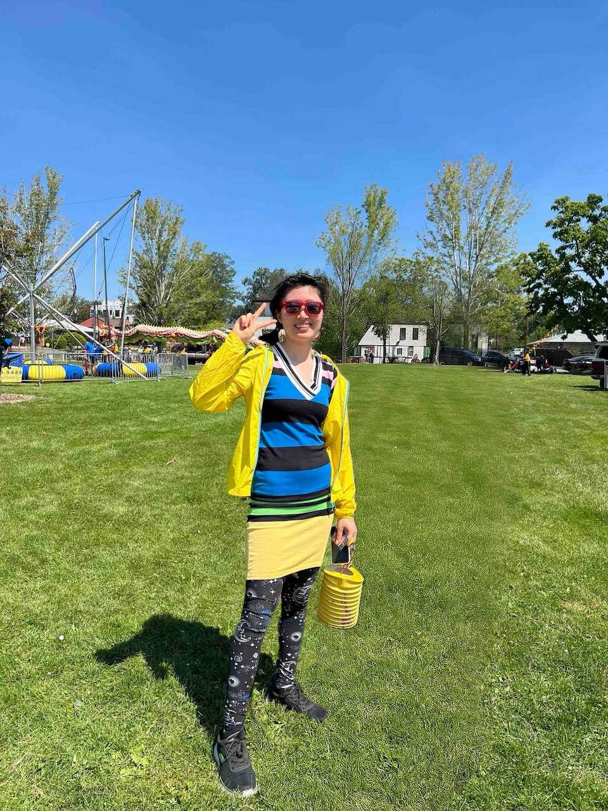

When I was a child, I learned to face the world on my own. My earliest memories are of my parents always working, studying abroad, or traveling for business. When I was two, my mother left for the United Kingdom to earn her master's degree, and I didn't see her again until she graduated. My father often traveled internationally - once for 224 days straight - and later transferred to the United States when I was seven. I grew up mostly with my grandparents, who taught me independence at an early age.
One day, my father called from overseas and said, "You are different from other kids. Your parents can't always be there to help you. You must learn to solve problems by yourself." From then on, whenever I faced difficulties, I found ways to overcome them. I never attended tutoring classes, yet I consistently earned top grades because I developed strong self-learning skills and resilience.
In March 2022, after the pandemic, I immigrated to the United States to join my father. It was only a few months before high school started, and I once again faced a major challenge in a completely new environment. I told myself: Be the best version of yourself. Adapt quickly. Work hard to belong here.
I am deeply grateful to my teachers - they encouraged me, believed in me, and gave me confidence. I gradually fell in love with my new school, my teachers, and this country. To catch up, I used every moment I could to study. I memorized vocabulary on the school bus, studied every night, and spent weekends and holidays reviewing lessons. Starting sophomore year, I stopped eating lunch in the cafeteria to save time for asking teachers questions and doing extra work.
At first, I barely understood what the teachers were saying in class. Every night, I reviewed the day's lessons and previewed the next. Each summer, I self-studied the coming year's courses to reduce the language barrier. U.S. History was especially difficult for me, so I found American history courses on YouTube and studied the entire curriculum on my own. That gave me a solid overview and confidence to keep going.
Junior year, I challenged myself by taking two economics courses. I failed my first test with a C, and I was heartbroken. But I refused to give up. I searched for online resources, watched lectures, and studied until late every night. My father reminded me that "efficiency matters more than hours." His words changed the way I learned. I became more organized, and gradually my grades rose from C to A. That feeling of progress was one of the happiest moments of my life.
As I adapted more, I gained confidence and began choosing more Honors and AP classes to challenge myself further. I took two math classes in one school year, and over four years of high school, I completed six math courses. I worked hard to keep an A in every class and received several academic awards, including the Scholar Award for Math, Outstanding Achievement in English Acquisition and Varsity Academic Awards.
Beyond academics, I actively joined clubs and volunteer activities that helped me grow as a person. In school clubs, I learned teamwork and how to express ideas effectively with others. Volunteering at the Denver Rescue Mission taught me the spirit of service and compassion for people in need. I also created my own YouTube channel to share what I've learned with others. My goal is to become someone who not only has knowledge and ability but also uses them to help others.
There's a line from Spider-Man that always stays in my heart: "With great power comes great responsibility." I want to keep improving my abilities and, one day, contribute to humanity - just like the scientists I admire who dedicate their lives to discovery and progress.
